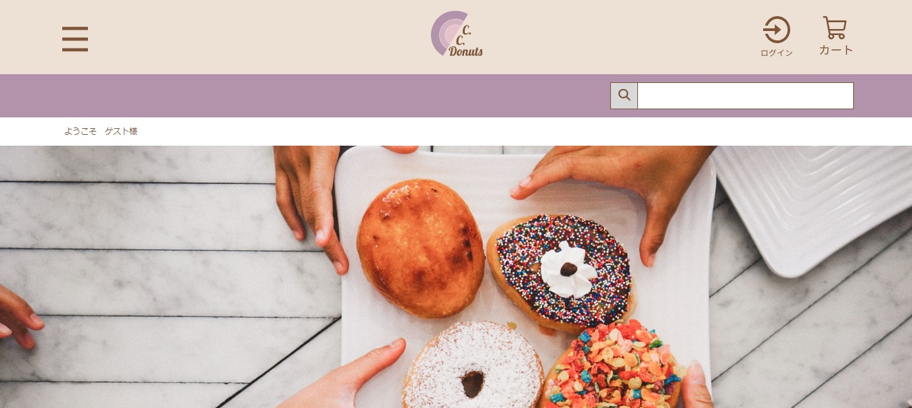

Profile
はじめまして。金子翔暉と申します。 ご訪問してくださりありがとうございます。 このWebサイトでは、2024年5月より受講中の求職者支援訓練校Webエンジニア・プログラミング習得科にて制作した作品を掲載しております。 まだまだ未熟で技術も劣ってはいますが、完全未経験からの約半年分にわたり習得してきた技術と、新たに学ぶ知識を持って活躍していきたいと考えております。 何卒よろしくお願いします。
L o a d i n g . . .
はじめまして。金子翔暉と申します。 ご訪問してくださりありがとうございます。 このWebサイトでは、2024年5月より受講中の求職者支援訓練校Webエンジニア・プログラミング習得科にて制作した作品を掲載しております。 まだまだ未熟で技術も劣ってはいますが、完全未経験からの約半年分にわたり習得してきた技術と、新たに学ぶ知識を持って活躍していきたいと考えております。 何卒よろしくお願いします。
制作演習にて作成した架空サイト1つ目
制作期間: 2024年7月26日〜2024年8月8日
自分の担当個所: Javascript ローディング画面 、HTML/CSS 台中ページ
当時の状況: 初めてのチーム制作演習。習得した知識、使用したことがない新たな要素を加えたりして、各ページ役割分担をしながら進めました。 途中、自分含むチームメンバーが発熱、体調不良等でメンバー全員がなかなか揃わず、制作期限に間に合わない状況になってしまったのですが、最低限モバイルファーストの要項を達成するべく、ページ制作の優先順を設けて制作を行いました。
制作演習にて作成した架空サイト2つ目
制作期間: 2024年9月26日〜2024年10月9日
自分の担当個所:
Javascript ローディング画面、ドロワーメニュー
HTML/CSS 商品一覧ページ、商品詳細ページ
当時の状況: 2回目、そして早くも最後のチーム制作演習。メンバーに迷惑を掛けたくなかったので、出来るところ、出来ないとこををしっかり伝え、自分が得意、好き、出来るところを優先的に記述していきました。PHPに関してはメンバーに任せましたが、他の細かい機能を入れたり、アニメーションをいれたりして、制作に貢献できました。 前回の反省を活かし、デザインカンプの通りの完成まで記述できたことに成長を実感しましたが、実際はチームメンバーに助けていただきながらコーディングを行っていたので、コミュニケーションの重要さも改めて学ぶことが出来ました。
高校卒業後、半導体製造メーカーで生産技術部門にて就業。 CADによる部品製図、旋盤、フライス盤、ボール盤などの工作機械を使用した部材加工、加工した部品の組立て、 治工具の制作、製造現場で使用している機械メンテナンスなどの業務を担当しておりました。 先輩方に教わりながら制作した治工具をある作業工程に導入したところ、工程作業時間を約30秒ほど短縮することに成功いたしました。 不便な所を聞く、調べる、改善するということを率先して行うことができるので、IT業界でもこの力は通用すると考えております。
2018年から約5年間勤務
IT業界では出番は無いと思いますが、このような資格を取得し前職の業務に活かしておりました。
HTML Living Standardの仕様に準拠したページ構造の定義を行うことができます。
保守性と拡張性を備えたCSSの記述を行うことができます。
このポートフォリオサイトはBootstrap5で制作しています。
画像のスライドショーやローディング画面、アラート表示等のインタラクティブな機能を実装することができます。
ローカル環境に仮想サーバ環境を構築して開発し、レンタルサーバへデータベースを含めた移行ができます。
Notionによるプロジェクト管理を行うことができます。各タスクに担当者を設定し、計画的に進めることが出来ます。
チーム制作でGitとGitHubを利用することができます。 GitHub上でメンバーのブランチからのプルリクエストを承認して、マージすることができます。
VSCodeによるコーディングスキルを持っています。
各OSの基本操作を行うことができます。
モダンブラウザの開発者モードを利用することができます。
FigmaによるデザインカンプをもとにHTMLとCSSの設計を行うことができます。
WebサイトをWebサーバへアップロードすることができます。
複数人の会議やセミナーへ参加することができます。
改めまして、金子翔暉です。閲覧ありがとうございました。 趣味はゲームを遊ぶこと、そして最近新しく絵を描くことを始めました。趣味がゲームだけではちょっと寂しいな…と感じていた時、突如「ゲームに登場するキャラクターを描きたい！」という衝動に駆られ、コーディングと併せて勉強しています。 絵もプログラミングも、0から1を生み出すのはやはり大変で、難しいことだと痛感しています。どちらも深く突き詰めて上達するためには、繰り返しによる慣れや新しい知識の習得が不可欠ではないでしょうか。 なので、これからも、皆さんの作り上げてきた作品を通じてクリエイティビティを広げ、成長していきたいと考えています。自分が今できないことができるようになる瞬間が一番気持ちいいので！